Ориентирование на берегах Невы
Город, где ориентирование стало спортом
Ленинград часто называют родиной отечественного спортивного ориентирования, и у этого есть веские основания. Здесь в 1939 году прошли первые ночные соревнования туристов по «закрытому маршруту», а 19 июля 1959 года стартовали дневные личные соревнования по специально подготовленной карте, и именно эту дату ФСО России в 2016 году официально признала днём рождения отечественного ориентирования. Окрестности города — прежде всего Карельский перешеек с его моренными холмами, озёрами и скалами — оказались идеальным полигоном: технически сложный лес начинается в часе езды на электричке.
Статья прослеживает путь ленинградского, петербургского и областного ориентирования — от синек с контрольным грузом за спиной до лидарных карт, спринтов в исторических кварталах и рогейнов на сотни участников. Опорой служат книга Н. В. Благово «Первые азимуты на берегах Невы», исторические страницы В. В. Добрецова на O-Site, хроника Федерации спортивного ориентирования Санкт-Петербурга и, конечно, календарь и архив карт O-Maps. Все упомянутые люди собраны в указателе имён в конце статьи.
- Предтеча
- 1939, ночной «закрытый маршрут» В. В. Добковича
- Первый старт
- 19 июля 1959, Линдуловская роща у Рощино
- Федерация
- с 8 декабря 1977 года (до этого — секция при Ленинградском клубе туристов)
- Главные районы
- Токсово, Орехово, Лемболово, Кузнечное, Выборг, Луга
- Архив O-Maps
- около 1 430 карт Петербурга и области, 3 626 событий в календаре 2004–2026 годов (на октябрь 2026 года; все числа O-Maps — на эту дату)
Места на карте
Где проходили соревнования, о которых рассказывает статья. Точка стоит там же, где событие на карте календаря O-Maps — в его координатах или в центре его карты, поэтому у многодневных стартов точек несколько. Цвет точки показывает, когда место впервые появляется в статье, число в кружке — сколько рядом точек. Значок 📍 в тексте ведёт к месту на этой карте.
Все места списком
1939–1958: «закрытый маршрут» и контрольный груз
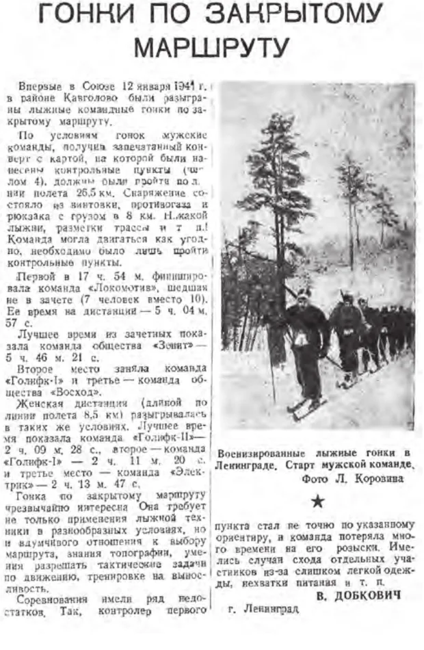
Мысль сделать умение ходить по карте и компасу предметом состязания пришла к преподавателю ЛГПИ им. А. И. Герцена Владимиру Владиславовичу Добковичу (1907–1983). В 1939 году он провёл в окрестностях Ленинграда ночные командные соревнования туристов по неизвестному до старта, «закрытому» маршруту: в заданном порядке нужно было найти несколько контрольных пунктов. В 1940-м прошло первое летнее первенство города, а 12 января 1941 года рядом с Кавголово — лыжная гонка по закрытому маршруту📍. Сказывался опыт недавней финской войны: мужчины шли 26,5 км с винтовкой, противогазом и 8 кг груза, женщины — 8,5 км; на старт вышли 16 мужских и 10 женских команд по десять человек. Лучшее зачётное время показала команда «Зенита».
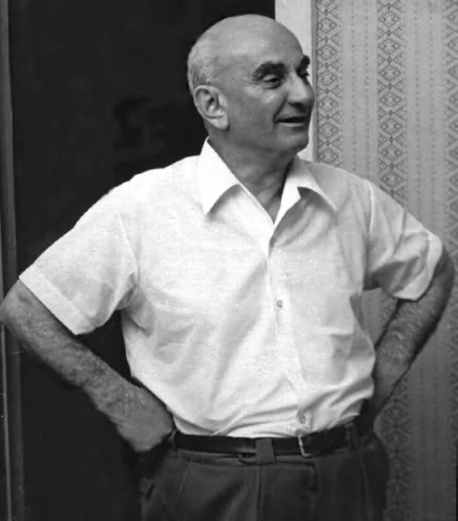
После войны соревнования возобновились уже в 1947–1949 годах и в 1950-е стали очень популярны, особенно у студентов: на одном из осенних первенств ЛГУ у Чёртова озера стартовало свыше 200 команд, больше тысячи человек. Картой служила «синька» — светокопия выкопировки из топокарты 1:100 000 или 1:50 000, где были лишь дороги, просеки и крупные водоёмы. Команда получала запечатанный конверт с картой-схемой и «приказом» вида «от пересечения дороги с ручьём 675 м по азимуту 243°». Рюкзаки пломбировали свинцовой пломбой: у мужчин-разрядников было 12 кг контрольного груза, у женщин 10 кг. На каждом КП горел костёр и сидел контролёр — иногда он засыпал, костёр гас, и найти пункт становилось почти невозможно. Дистанции достигали 25–30 км, финишировали нередко утром.
Сильнейшими были команды вузов — ЛПИ, ЛГУ, ЛГПИ, ЛИТМО, ЛЭТИ — и заводов «Красная заря» и Кировского. В феврале 1958 года сборная Ленинграда (А. Муравьёв, Б. Полоскин, Г. Сидоров, А. Харитоненко, Л. Емельянова-Горбова, В. Иванова, Л. Соболева (Цветкова), Е. Руднева) выиграла общий зачёт I Всероссийских зимних соревнований туристов в Свердловске📍. Но к концу 1950-х всё чаще звучало: груз мешает бежать, а в команде из пяти человек думает один капитан.
19 июля 1959 года: по одному, днём и без рюкзаков
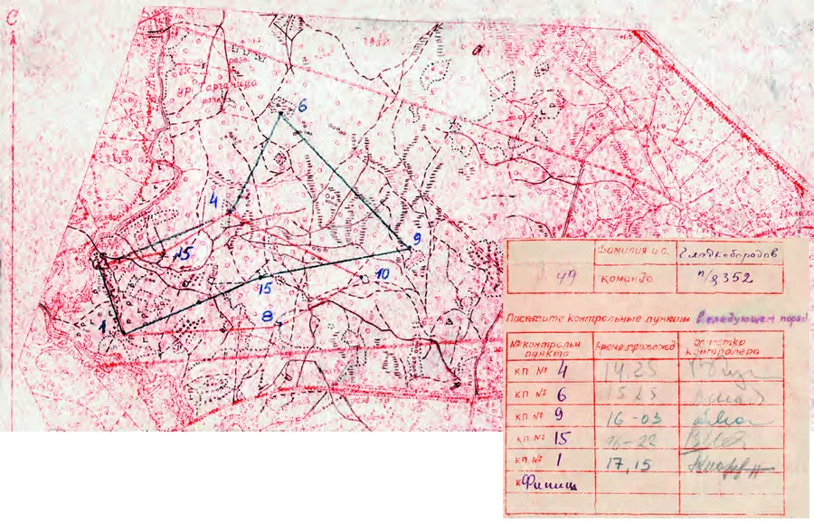
Новую формулу предложил ученик Добковича, мастер спорта по туризму Лев Вениаминович Лебёдкин. В 1958 году он около тридцати дней корректировал местность у станции Рощино и подготовил кальку карты масштаба 1:20 000 площадью 12 км². Председатель городской туристской секции А. Л. Васильев добился разрешения — выпускать туристов в лес поодиночке противоречило всем правилам безопасности того времени.
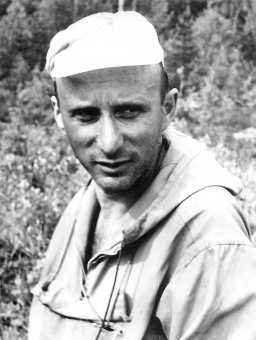
19 июля 1959 года📍 у реки Линдуловки стартовали 32 мужчины и 17 женщин — днём, по одному и без груза. Главным судьёй был Р. А. Рыбин. Мужскую дистанцию 8,2 км с пятью КП выиграл Анатолий Муравьёв, женскую (5,7 км, пять КП) — Т. Силивестрова. Бежали с армейскими компасами Адрианова и непрочной синькой, отметку в карте делали контролёры. Никто не заблудился и не травмировался, а на финише победители, по воспоминаниям Н. В. Благово, развивали «прямо-таки спринтерскую скорость». Тот старт стал первым летним первенством Ленинграда. Осенью на городском слёте📍 опробовали ещё один вид — «ориентирование с нанесением положения ориентира на карту», предшественника маркированной трассы, а 10 марта 1960 года в Орехово прошёл первый зимний чемпионат города📍 на маркированной трассе (чемпионы — Л. Лебёдкин и Н. Николаева).
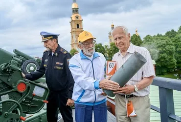
25 декабря 2016 года ФСО России официально признала 19 июля 1959 года датой рождения отечественного ориентирования. В юбилейном 2019 году Никита Благово и Анатолий Муравьёв произвели полуденный выстрел из пушки Петропавловской крепости, а 4 августа в Линдуловской роще открыли памятный камень и провели ретро-старт📍 — по чёрно-белой карте старого образца и с отметкой карандашом в карточке. Под Полянами в те же дни прошёл фестиваль 60-летия спортивного ориентирования России📍.
1960–1965: правила, школьники и первые всесоюзные трассы
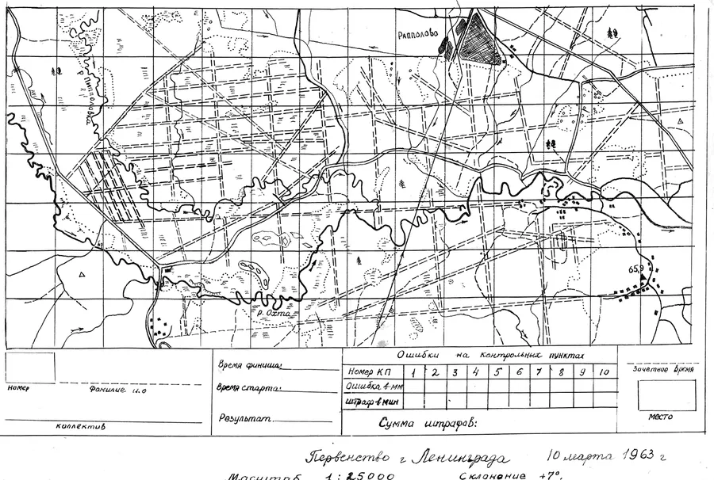
Новый вид быстро нашёл сторонников. Уже в 1962 году в городе прошло 28 летних и 20 зимних соревнований, на которые вышло около 4 700 человек. Секрет, по мнению Н. В. Благово, был в сочетании технически сложной местности рядом с городом и достоверных, тщательно откорректированных карт: президиум Коллегии судей искал для каждого крупного старта новый район и хорошую основу масштаба 1:25 000, а дистанции разбирали на семинарах. С 1967 года ленинградцы одними из первых в стране перешли от кольцевой планировки дистанций к перекрёстной.
Первые общесоюзные правила соревнований разработали на конференции в Тарту в 1961 году под руководством эстонского педагога Э. Изопа; русский текст редактировала ленинградка Гертруда Николаевна Васильева — первый тренер и первый председатель городской Комиссии по слётам и соревнованиям (1962). В 1962 году Г. Козлович, выступая за сборную Вооружённых сил на матче с финнами под Тбилиси📍, привёз в Ленинград жидкостный компас Suunto, и вскоре энтузиасты под руководством Н. Александрова наладили кустарное производство таких компасов со стрелками от компаса Адрианова. В 1964 году Ф. Вергилесов, по данным летописи, придумал для зимнего ориентирования планшет-столик для крепления карты.
К началу 1960-х относится и детское ориентирование: И. Е. Штейнбук начал заниматься с ребятами в Ленинградском Дворце пионеров (кружок открыт в 1962 году), а учитель математики В. А. Рыжик в 1964 году создал в 239-й школе туристский клуб «Шаги». Эти два центра много лет пополняли сборные города.
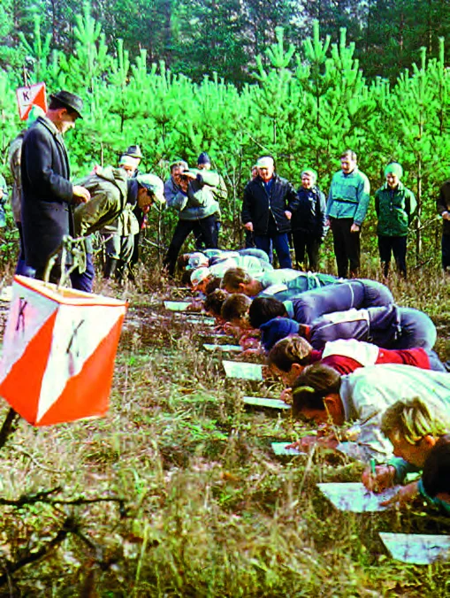
Летом 1963 года, 7 июля, в Песках прошёл матч пяти команд — Москвы, Ленинграда, Эстонии, Литвы и Свердловска (главный судья А. И. Муравьёв, начальник дистанции Л. В. Лебёдкин). С 1964 года к нему присоединились Киев, Минск и Рига, и соревнование вошло в историю как «Матч восьми городов». Успех встречи ускорил решение о I Всесоюзных соревнованиях в Ужгороде в октябре 1963 года📍: ленинградцы стали четвёртыми среди 17 команд, а женская пятёрка (Н. Башарина, Т. Лобанова, Н. Мареева, Л. Милова, З. Пятакова) увезла кубок лучшей женской команды. Через два года в Перми Большанская, Смирнова и Лобанова выиграли эстафету📍 — первые золотые медали всесоюзного уровня в активе Ленинграда.
1966–1970: мастера спорта, многодневки и международный дебют

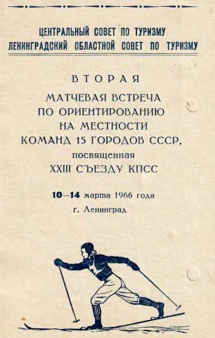
В марте 1966 года Ленинград принял зимний матч команд городов СССР — предшественника всесоюзных зимних соревнований. В Юкках📍 на маркированной трассе сильнейшей среди женщин стала Зоя Пятакова, а 13 марта в Орехово📍 впервые прошли эстафеты на маркированной трассе со штрафными кругами по правилам Л. В. Лебёдкина; мужскую выиграли ленинградцы Л. Беляков, В. Митенков и В. Малинин. Летом сборная города (тренер Л. В. Беляков) впервые выиграла «Матч восьми городов» в Загорске📍, а победа Людмилы Фомичёвой в личном зачёте принесла ей звание мастера спорта СССР по ориентированию — первой среди женщин страны (присвоено в январе 1967 года вместе с москвичом Валерием Игнатенко). В октябре 1966 года в Орехово появилось «марафонское» ориентирование📍: Людвиг Беляков пробежал 35,4 км, Татьяна Смирнова — 25 км.
Весной 1968 года Л. В. Беляков и С. Н. Крылов провели под Каннельярви первую в стране массовую многодневку📍 — пять дней стартов, свыше 400 участников из Ленинграда, Прибалтики, Москвы, Свердловска и Горького. В том же году О. Казанцева и В. Малинин первыми из ленинградцев вошли в сборную СССР, а 13–15 сентября у Петяярви и Снегирёвки прошла первая в СССР международная встреча📍 — сборные СССР и Болгарии (главный судья Н. В. Благово). Ольга Казанцева, получив на эстафете серьёзную травму, всё же закончила этап и обеспечила победу сборной страны.
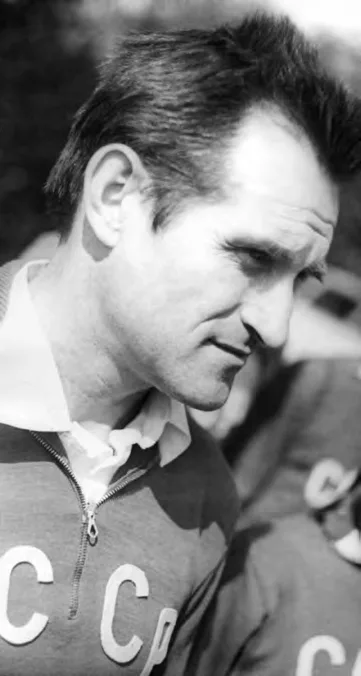
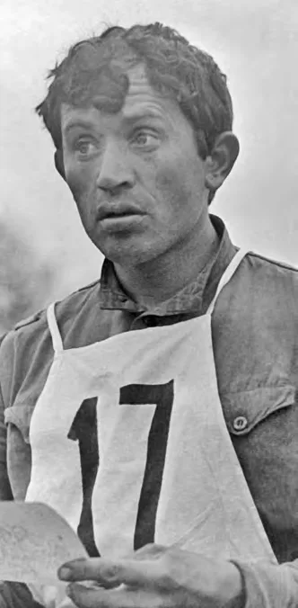
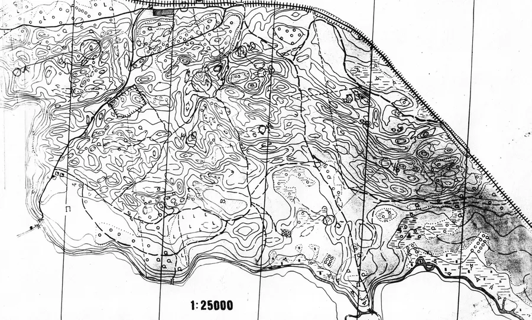
1969 год стал вершиной первого поколения. На IV Всесоюзных соревнованиях в брянских лесах — на картах «небывалой доселе достоверности», подготовленных москвичами во главе с В. М. Алёшиным, — сборная Ленинграда впервые выиграла общий зачёт и заняла призовые места во всех семи видах программы; победили З. Пятакова, мужская и юниорская эстафеты. В том же году в Одессе прошёл первый матч городов-героев (ленинградцы выигрывали его восемь раз из десяти), Ю. Н. Леонов основал областную спортшколу по ориентированию — начало систематической работы в Ленинградской области (о её «золотом веке» — воспоминания в журнале «Азимут»), а для отметки на КП впервые применили компостеры. Юбилей «10 лет спортивного ориентирования в Ленинграде» отметили стартом у Гарболово📍.
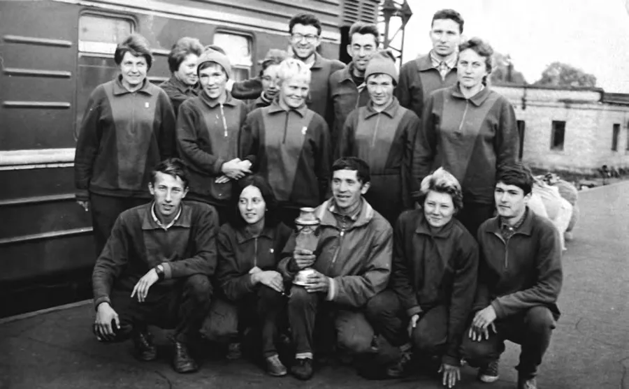
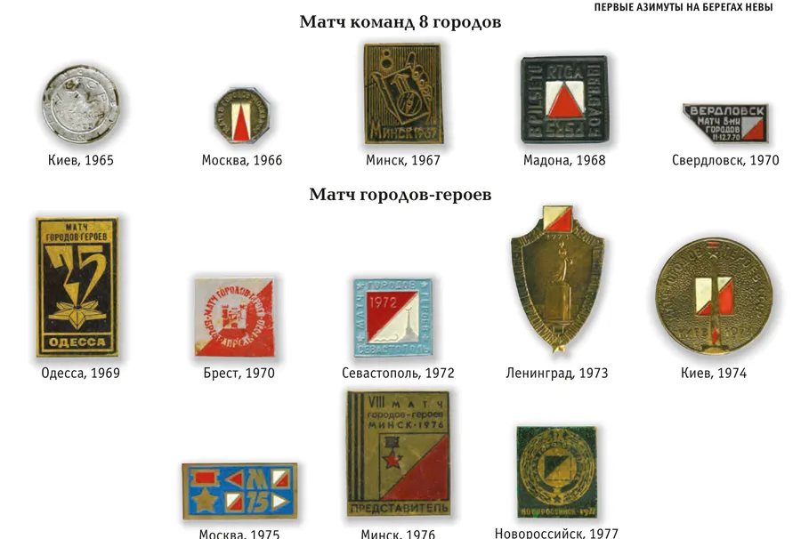
Матчи: Эстония, Рига, Москва и города-герои
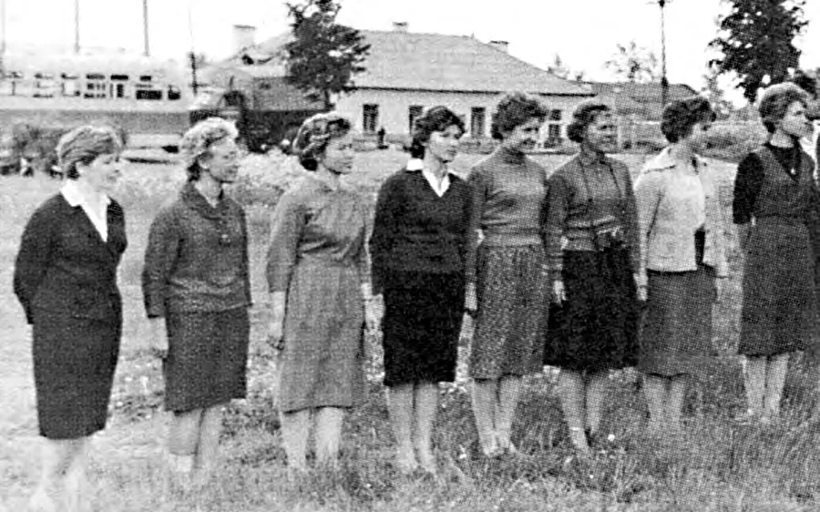
Двусторонние матчи долго были лучшей проверкой сил перед всесоюзными стартами. Старейший из них — Эстония — Ленинград. О нём осенью 1959 года договорились председатель ленинградской городской секции туризма А. Л. Васильев и председатель федерации ориентирования Эстонии, а первая встреча📍 прошла летом 1960 года у Орехово. Начальники дистанций, ещё не отвыкшие от закрытого маршрута, дали каждому участнику свой вариант дистанции, и победителей было непросто определить; лучшими назвали эстонца Аго Вило и ленинградку Тамару Тришину, а общий зачёт по сумме времени выиграли хозяева. С тех пор матч проводили ежегодно, как правило в последние выходные июня, поочерёдно на эстонской и ленинградской земле. С 1961 года в каждой команде было по 10 мужчин и 10 женщин, с 1966-го в программу вошла эстафета, позже появился зачёт младших возрастов. Матч был отборочным, к нему специально готовились, а эстонцы, принимая гостей, нередко добавляли к нему культурную программу.
Борьба шла почти на равных. Самый большой отрыв, 7:4, эстонцы набрали после XI матча, который прошёл в 1970 году у Вартемяг📍 (так подписана сохранившаяся карта; в таблицах матчей указано Симагино), но к 1984 году, после 25 летних встреч, счёт стал 13:12 в пользу Ленинграда. Чаще побеждали хозяева, хотя в гостях каждая команда выигрывала по два раза. В личном зачёте ленинградцы побеждали 11 раз у мужчин и 15 — у женщин, трижды первой была И. Степанова, а Лидия Милова пробежала 24 таких матча — рекорд, который, по словам Благово, «вряд ли удастся повторить». Самый известный эпизод серии случился на IX матче 1968 года под Лугой: два соседних КП женской дистанции оказались на разных берегах реки, вдали от моста, и Ольга Казанцева, не раздумывая, переплыла стремнину и выиграла. С 1972 года команды встречались и зимой (здесь счёт 8:3 в пользу Ленинграда); на зимних матчах в городе впервые провели лыжное заданное направление и эстафету в нём (подробнее — в разделе о лыжном ориентировании). Как указано в статье на O-Site, летние матчи шли ежегодно до начала 1990-х, потом — от случая к случаю; последние прошли под Петербургом в 1997 году, в Эстонии в 2002-м и снова под Петербургом в 2003-м, в рамках «Белых ночей».
Ещё выше ценился «Матч восьми городов» (1963–1970), о начале которого рассказано выше. По уровню он соответствовал летнему Кубку страны и служил генеральной репетицией перед всесоюзным первенством. Сильнее всех там была Рига (три общие победы), ленинградцы всегда были в призах, а выиграли один раз — в 1966 году в Загорске📍. Этот матч открыл ленинградцам дорогу к званию мастера спорта: кроме Л. Фомичёвой его получила занявшая третье место О. Малова (Казанцева), а В. Митенков вспоминал, что четвёртое место принесло ему первые «полбалла» нормы; в июле 1967 года он первым из ленинградских мужчин стал мастером спорта. Тем же летом на матче в Минске тренер Л. Беляков попросил Митенкова уступить место в эстафете В. Малинину: Г. Козлович на первом этапе выиграл у соперников 20 минут, С. Крылов на втором — ещё 20, и после финиша Малинина, по словам Митенкова, «в Ленинграде появились ещё три мастера спорта». Почти все матчи той эпохи имели «мастерский» класс, и немало ленинградцев выполнили норматив именно на них.
Особое место занимал матч городов-героев (1969–1978). Первая встреча состоялась во многом благодаря инициативе одесских коллег, которую поддержали Н. В. Благово и В. Б. Митенков: матч приурочили к 25-летию освобождения Одессы, а поскольку подходящего леса рядом с городом не нашлось, карты подготовили у Бендер в Молдавии. Ленинградцы приехали на первый матч за свой счёт и неполным составом — и всё равно выиграли. Непременной частью каждой встречи были торжественное открытие и посещение мемориалов: Мамаева кургана, Брестской крепости, разъезда Дубосеково, Хатыни, музея обороны Севастополя. Пятый матч📍 прошёл в 1973 году под Рощино. По сохранившейся программе с эпиграфом «Никто не забыт, ничто не забыто» накануне старта участники побывали в Смольном и возложили венки на Пискарёвском кладбище, а на открытии выступил ветеран войны. В зачёте было семь городов, ещё семь команд бежали вне конкурса, и у женщин весь пьедестал зачёта заняли ленинградки — О. Казанцева, З. Пятакова и Л. Милова, хотя вне конкурса быстрее них пробежали пять гостий из Латвии и Эстонии. Из десяти матчей Ленинград проиграл только два, «в первую очередь из-за слабого выступления в мужской эстафете»; Пятакова — единственная участница всех десяти встреч. Серия прекратилась, когда ориентирование передали в систему Спорткомитета и матч не включили во всесоюзный календарь.
С сильнейшей в те годы командой Риги ленинградцы встречались с 1968 года. Первый матч, у Сигулды, «как и ожидалось», выиграли хозяева, и рижане побеждали девять раз подряд, в том числе и под Ленинградом — у Ильичёво и у Шапок📍. Впервые ленинградцы выиграли десятый матч, в Сосново, потом ещё в Вещёво (1980) и Выборге (1982); итог серии — 10:3 в пользу Риги за 13 матчей. Связи с Москвой начались зимой 1965 года с матча ДСО «Труд» двух городов, который почти до конца 1970-х проводили дважды в год, зимой и летом (в календаре O-Maps есть встреча 1969 года в Ольгово), а после всесоюзных соревнований 1968 года под Калугой📍 появился зимний матч сборных Москвы и Ленинграда📍 — чтобы набраться опыта выступлений на московской земле. Для резерва сборной и команды области с 1970 по 1976 год проводили тройственный матч Ленинград-2 — Петрозаводск — Ленинградская область. Матчи были частью отбора в сборную города: в календаре 1970 года летние встречи с Эстонией и Ригой значатся пятым и шестым турами.
Принимал Ленинград и международные встречи. Кроме матча СССР — Болгария 1968 года, в мае 1975 года под Ленинградом прошёл второй день матча армейских сборных СССР и Франции📍 (первый — под Москвой; годом раньше встреча проходила во Франции). Карту для него, одну из первых цветных ленинградских, готовил Ю. Л. Шелёхин, а французские гости возложили венок на Пискарёвском кладбище. В 1980 году на «Белых ночах» впервые подняли флаги Ленинграда, ГДР и Финляндии: молодёжный состав города уступил дрезденскому «Локомотиву», а первая сборная обыграла клуб «Хирвенсало Хейтто» из Турку; ответная встреча в Турку в 1981 году закончилась вничью, а в 1982-м финны снова уступили.
- Эстония — Ленинград
- летом 25 матчей в 1960–1984 годах, 13:12 в пользу Ленинграда; зимой с 1972 года — 8:3 в пользу Ленинграда (летние и зимние матчи на O-Site)
- Рига — Ленинград
- 13 матчей в 1968–1982 годах, 10:3 в пользу Риги (O-Site)
- Матч восьми городов
- 7 матчей в 1963–1970 годах: одна победа Ленинграда (1966), в остальные годы второе или третье место (O-Site)
- Города-герои
- 10 матчей в 1969–1978 годах: 8 побед Ленинграда, дважды второе место (O-Site)
Массовость: «Белые ночи», «Ориентир» и семейные пары
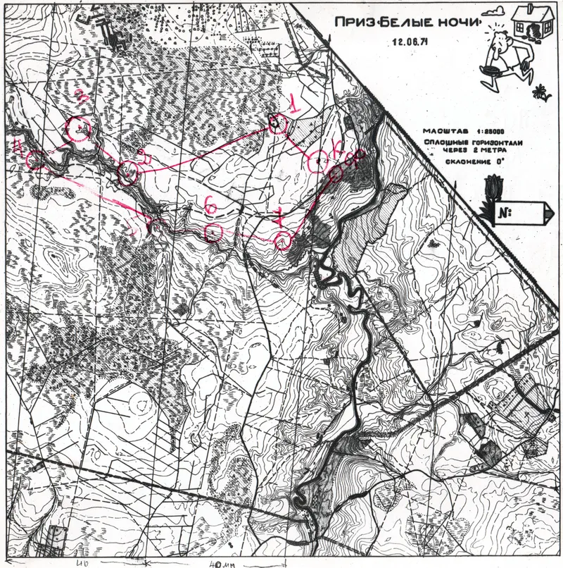
Главной заботой секции было вовлечение новичков. В календарь вошли слёты, Кубок ЛКТ, Приз ЛОСТЭ, «Приз первокурсника», «Золотая осень», старты ко Дню Победы и годовщине снятия блокады. С 1970 года сезон открывала «Новогодняя эстафета»📍, которую с 1974 года много лет проводил спортклуб «Позитрон».
12 июня 1971 года по предложению Н. В. Благово у Рощино прошли первые «Белые ночи» — победили З. Пятакова и С. Крылов. С 1974 года многодневку готовил спортклуб «Экран»: Сергей и Ольга Казанцевы и Мария Малова каждый июнь рисовали новые карты с эмблемой-совой, добавили ночные старты, в 1979 году к 20-летию ленинградского ориентирования провели 20-этапную ночную эстафету📍, а в 1980-м📍 на старт у Нахимовского озера вышли команды городов-побратимов Дрездена и Турку и более 1 200 участников. С 2001 года «Белые ночи» проводит одноимённый клуб; сегодня он же организует зимне-весенний Кубок Белых ночей — в календаре O-Maps это 203 этапа с 2014 года.
В 1973 году по эстонскому образцу появились открытые вечерние тренировочные старты «Ориентир» по четвергам в парках и ближних лесах; первый📍 26 апреля провёл Ю. Л. Шелёхин в Сосновке. В 1988 году серия, которую к тому времени вёл клуб «Азимут» (бывший «Спартак»), насчитывала больше двадцати этапов за сезон. С 1972 года в последнюю субботу октября проводятся ночные командные соревнования по закрытому маршруту памяти Анатолия Окинчица — единственный старт, где «прародители»-туристы и «наследники»-ориентировщики соревнуются на одной местности. С 1975 года Владимир и Татьяна Шумиловы проводят «Свадебные» («Золотые кольца») — соревнования семейных пар в группах по суммарному возрасту.
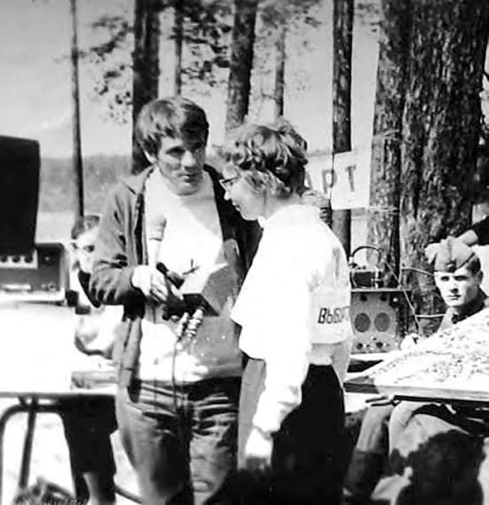
11 июня 1972 года у озера Щучьего под Комарово прошли соревнования на призы Ленинградского телевидения📍: вышки, передвижная электростанция, огромный демонстрационный макет местности и сорокаминутная передача — впервые ленинградское телевидение так подробно показало лесной спорт. С 1981 года благодаря В. Н. Шумилову старт возобновился и проводился ежегодно до 1992 года. Тот же Шумилов в 1980 году учредил соревнования на призы газеты «Невская заря» (позже — «Всеволожские вести»). В 1983 году А. М. Василевский объединил рядовых взрослых ориентировщиков в клуб при ЛГС «Спартак» — будущий «Невский Азимут», ныне КСО «Азимут», на долгие годы ставший центром массового ориентирования.
Мастера трассы: от синьки к цветной карте
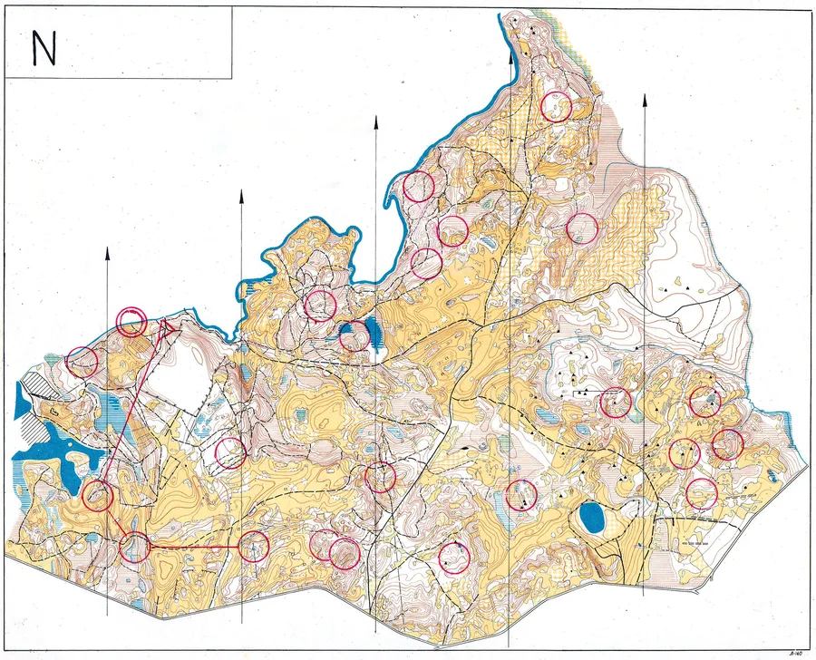
Первые дистанции подготовил Л. В. Лебёдкин, затем секреты корректировки освоили А. И. Муравьёв, А. К. Григоренко, Л. В. Беляков, А. Д. Котов, позже — В. М. Баймаков, С. А. и О. М. Казанцевы, М. М. Малова, А. И. Ходанович, С. Н. Крылов, В. Б. Митенков, Г. В. Козлович, В. Р. Кравченко, А. А. Потаков, Ю. Л. Шелёхин. Основой служили старые топокарты, результатом сначала были синьки, со второй половины 1960-х — фотоотпечатки с калек, прорисованных тушью. Чёрно-белая карта всё заметнее сдерживала рост мастерства, и в середине 1970-х В. М. Баймаков (Кавголово — Токсово) и Ю. Л. Шелёхин (Юкки, к матчу СССР — Франция📍) подготовили первые ленинградские цветные карты. Летопись и книга Благово относят их к 1975 году.
Следующее поколение — В. Н. Белозёров, В. Г. Урванцев, Б. В. Тарасов, А. А. Ширинян, С. В. Кузнецов, С. И. Кириченко, А. И. Лисененков, Л. А. Фёдоров, Ю. Б. Овчинников, А. М. Василевский, К. В. Волков, В. Л. Чегаровский, М. Н. Святкин, А. И. Левичев — открывало новые районы: в 1978 году Овчинников и Волков сделали первые карты у Кузнечного. В 1990 году ленинградцев впервые пригласили рисовать карту за границей (В. Чегаровский и Ю. Овчинников, Гдыня), а карты для Кубка мира ветеранов 1995 года стали первыми в Петербурге, вычерченными на компьютере; первой лицензионную программу OCAD освоила О. М. Казанцева. Сегодня в основном разделе архива O-Maps около 1 430 карт Петербурга и области, и десятилетие от десятилетия видно, как к лесным картам прибавляются городские, парковые и рогейнерские.
Любопытно, кто нарисовал больше всего. В основном разделе архива O-Maps лидирует Александр Ширинян — 146 карт Петербурга и области, причём первая его самостоятельная карта датирована 1972 годом (Кавголово📍). За ним идут Виктор Рылов и Виктор Добрецов.
1970-е: спартакиады, федерация и новое поколение
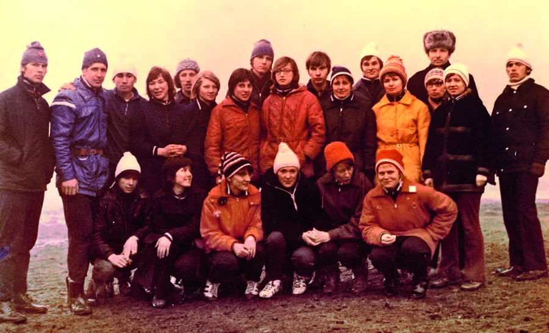
В сентябре 1971 года всесоюзные летние соревнования впервые прошли под Ленинградом — у Цвелодубово, Комарово и Озерков📍. Хозяева взяли две серебряные и три бронзовые медали. Зимой 1972 года на матче с Эстонией📍 в Кавголово впервые в городе провели лыжное ориентирование в заданном направлении. А в марте 1975 года на всесоюзных зимних соревнованиях📍 в Кавголово и Энколово сборная Ленинграда впервые выиграла общий зачёт зимнего первенства страны: З. Пятакова победила на маркированной трассе, мужская и юниорская команды — в эстафетах, а женскую эстафету выиграла команда Ленинградской области (Л. Иванова, Э. Иванова, Н. Святкина).
В середине 1970-х ориентирование вошло в программы спартакиад профсоюзов и Ленинграда; у большинства ДСО и ведомств появились штатные тренеры, а в чемпионатах города стали бороться сборные «Буревестника», «Динамо», «Зенита», «Спартака», «Труда» и СКА. 8 декабря 1977 года секцию сменила Федерация спортивного ориентирования Ленинграда, председателем которой (как и секции с 1966 года) был Н. В. Благово. Появились детские школы: в 1975 году В. Н. Шумилов и А. М. Бровин открыли секцию в Кузьмолово, в 1978-м — отделение при ДЮСШ Сестрорецкого района, в 1984-м — спортшкола № 2 при Дворце пионеров (В. Н. Белозёров). В 1978 году в программу зимних чемпионатов вошло заданное направление на лыжах, а И. Степанова и Н. Левичева первыми из ленинградцев выступили на чемпионате мира среди студентов.
В 1980 году под Кавголово и Осельками прошли первые всесоюзные соревнования ветеранов📍 — 269 спортсменов старше 35 лет из 43 городов.
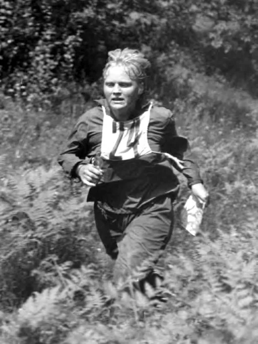
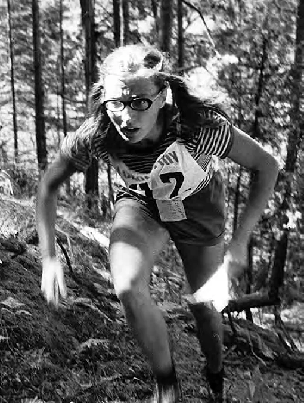
1981–1991: чемпионаты СССР и выход на мировой уровень
Первый чемпионат СССР в 1981 году был поручен Ленинграду: три гонки прошли на Карельском перешейке — у Выборга📍, на озере Уловном📍 и в Вещёво📍 (подробно — в статье о чемпионатах СССР и в архиве первого чемпионата). Ленинградки С. Березина, И. Иванова и Н. Левичева выиграли эстафету📍, а хрустальный кубок за общекомандную победу первым получил Ленинград. В 1982 году в Великих Луках📍 чемпионами страны в личном зачёте стали брат и сестра — Михаил Святкин и Надежда Левичева, в 1984-м в Тарту📍 Святкин выиграл все три вида программы, а в 1986 году в Каркаралинске📍 сборная Ленинграда снова взяла общекомандный зачёт и мужскую эстафету.
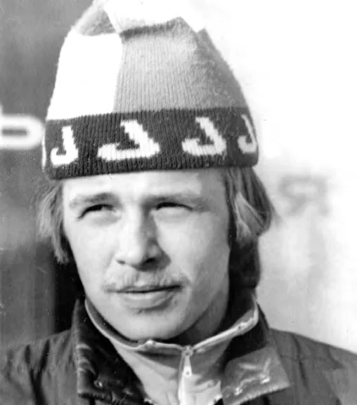
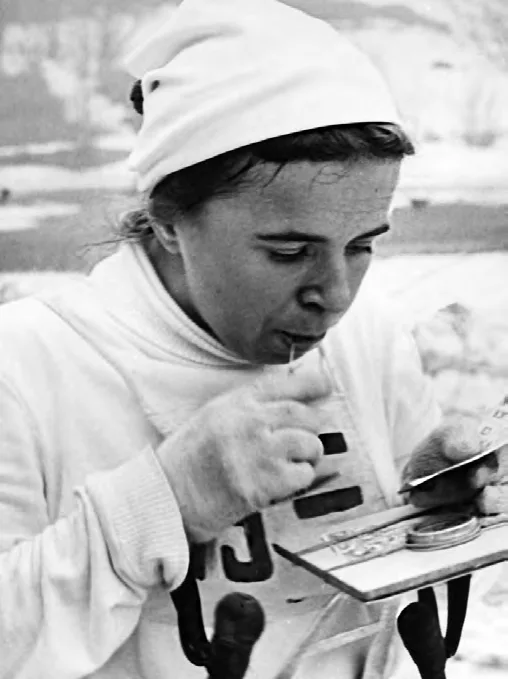
В 1987 году В. Алексеев и Н. Левичева первыми из ленинградцев выступили на чемпионате мира📍 (Франция), в 1988-м Левичева, Березина, Петрова и А. Левичев — на лыжном чемпионате мира в Финляндии. На чемпионатах мира бегом Владимир Алексеев был 7-м в 1989 году📍 и 4-м в 1991-м📍. В 1989 году лыжное ориентирование впервые вошло в Спартакиаду народов СССР, и сборная Ленинграда выиграла её общий зачёт, а Светлана Березина стала чемпионкой СССР в спринте📍 на первом лыжном чемпионате страны.
Массовое ориентирование конца 1980-х хорошо видно по календарю O-Maps: в 1988 году в нём уже 53 события, столько же в 1991-м, и больше всего среди них вечерних этапов «Ориентира». В 1988 году поездка группы ленинградцев на шведскую многодневку O-Ringen открыла эпоху массовых выездов за рубеж; в мае 1989 года 30-летие ленинградского ориентирования отметили трёхдневкой в Будогощи📍. 22 апреля 1990 года на Призе открытия сезона клуба «Невский Азимут» впервые применили компьютерно-жетонную систему определения результатов А. А. Казакова, а с того же года многодневка «Невский Азимут»📍 открывает июньскую серию питерских многодневок. Последнюю эстафету чемпионатов СССР в 1991 году выиграли мужчины Ленинграда📍 — М. Святкин, И. Гусев, О. Мельников и О. Анучкин.
1990-е: Санкт-Петербург, Кубок мира и скалы Кузнечного
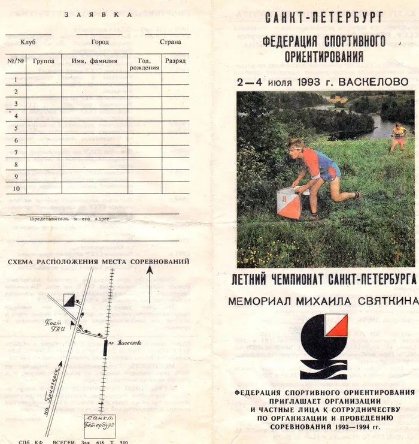
Новая страна началась с первых российских чемпионатов: в 1992 году Екатерина Петрова выиграла классику📍 на первом лыжном чемпионате России, в 1993-м сборная Петербурга взяла общий зачёт летнего чемпионата в Сортавале📍, в 1995📍–1996📍 годах мужская эстафета (О. Анучкин, В. Алексеев, М. Мамлеев) дважды становилась чемпионом страны. 16 мая 1992 года у Яппиля прошёл первый в России этап Кубка мира (карта и дистанции В. Л. и Ю. Л. Чегаровских), а осенью в Мичуринском📍 — первые международные детские соревнования «Надежды Европы».
В ноябре 1992 года на лыжной тренировке в Кузьмолово умер Михаил Святкин (о нём — воспоминания С. А. Казанцева в журнале «Азимут»). Уже в июле 1993-го сотни участников собрались в Васкелово на первый Мемориал его имени, который с 1995 года проводят выпускники и тренеры областной спортшколы; именно там в Петербурге впервые появились горячий душ после финиша, детский сад и микроориентирование для малышей. В 1995 году под Лемболово впервые в России прошёл Кубок мира среди ветеранов📍, в 1996-м на Карельском перешейке — чемпионат мира среди военнослужащих (CISM)📍, а в феврале 1999 года в Лемболово — первый в истории чемпионат мира по лыжному ориентированию среди ветеранов📍.
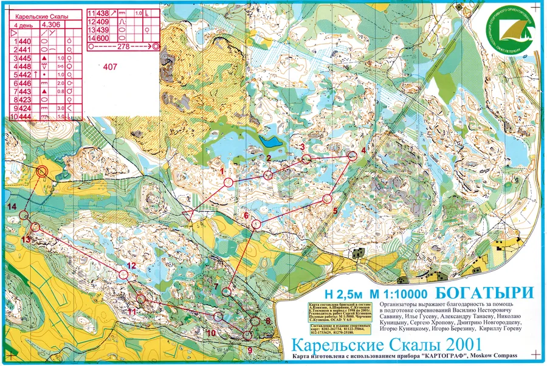
Петербург стал и колыбелью нового вида: 6 октября 1994 года здесь прошли первые в России соревнования по велоориентированию — шестикилометровую трассу преодолели три участника, а в сентябре 1996 года в Лемболово📍 прошёл первый чемпионат России на велосипедах — его инициатором был В. П. Бородин, первой чемпионкой стала Екатерина Петрова.
Осенью 1996 года бригада С. В. Кузнецова, А. А. Шириняна и А. Н. Ковязина начала осваивать скальные районы у Кузнечного. В июне 1997 года на новых картах прошли Кубок России📍 и массовая многодневка, со временем получившая имя «Карельские скалы». Кузнецов называл её «окном в Скандинавию»: технические сборы на насыщенных ориентирами картах помогали российским спортсменам сокращать отставание от северных соседей.
К 2000 году сложилась знаменитая июньская серия: «Невский Азимут», «Белые ночи», «Яркий мир», «Карельские скалы» и Мемориал Святкина шли друг за другом и собирали до двух тысяч участников из многих регионов. В 1999 году И. В. Фёдоров и М. В. Гуреев провели первую «Снежную тропу» — массовый зимний старт в городских парках, где на одном этапе бывает больше тысячи человек, а Виктор Добрецов открыл в интернете сайт истории питерского ориентирования, без которого эта статья была бы гораздо беднее.
2000-е: клубы, электроника, рогейн
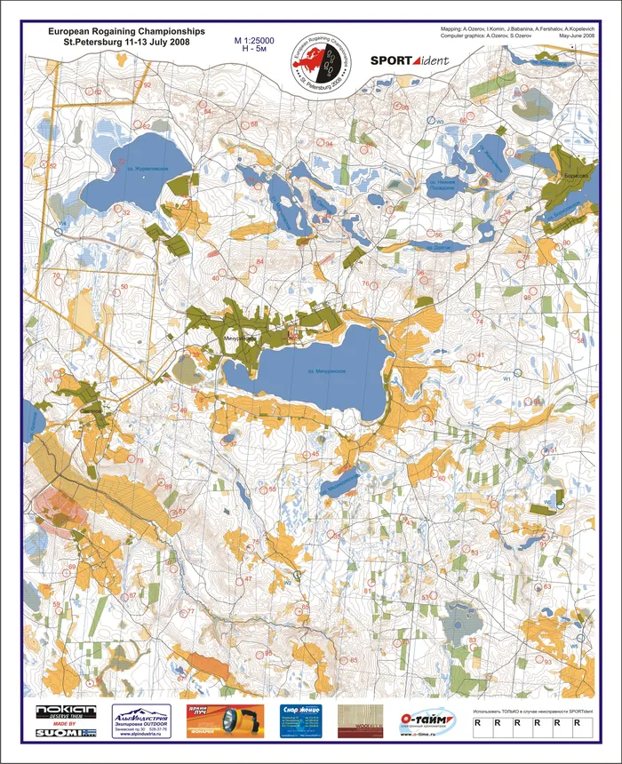
В начале 2000-х в городе быстро множились клубы: «Белые Ночи», Дворец творчества юных (ГДТЮ, бывший Дворец пионеров), «Миля-Спорт», «Балтийский берег», затем «Северный ветер», «Гольфстрим», «Веста», с 2004 года — Nord West. В 2003 году А. А. Курдюмов и С. Алексеев разработали отечественную систему электронной отметки SFR, впервые применённую на Мемориале Святкина📍, а на «Белых ночах»📍 впервые в Петербурге на массовом старте заработал SportIdent. В феврале того же года областная спортшкола приняла в Цвелодубово юниорский чемпионат мира по лыжному ориентированию📍, где Денис Ибрагимов выиграл эстафету. В 2004 году появился информационный ресурс O-Site (редактор Д. Куприенко), в программу чемпионатов города вошёл спринт, а в Павловском парке прошёл первый чемпионат России по бегу на заснеженном грунте📍.
В июле 2005 года у Орехово прошёл первый под Петербургом рогейн📍 — трёхчасовой «Горный кросс-3», в ноябре там же — I открытый Кубок Санкт-Петербурга📍 с форматом 24 часа, через год — первый чемпионат города📍. Рогейн быстро стал второй по массовости дисциплиной: кубки «Горный кросс» и «Рогейн 110%» насчитывают в календаре O-Maps больше чем по сотне этапов. В июле 2008 года Мичуринское приняло чемпионат Европы по рогейну📍 — 143 команды, 306 участников; в классе суперветеранов победили петербуржцы Александр Лисененков и Евгений Емельянов. В 2006 году в Приморском парке Победы впервые прошёл «Российский Азимут»📍 — около пяти тысяч человек.
Были и тревожные сигналы: в 2007 году, по летописи, команды Петербурга впервые не поехали ни на зимний, ни на летний чемпионат России. Зато на международной арене выросли свои звёзды. Михаил Мамлеев (интервью в «Азимуте», 2003) — чемпион мира среди юниоров 1994 года в эстафете — в 2002 году стал чемпионом Европы📍 на короткой дистанции и вторым в общем зачёте Кубка мира, а в 2003-м возглавил мировой рейтинг. Дмитрий Цветков, двукратный чемпион мира среди юниоров 2003 года, в 2008-м на чемпионате Европы в Вентспилсе выиграл длинную дистанцию📍 и эстафету📍, а в 2010📍 и 2013 годах📍 в составе сборной России стал чемпионом мира в эстафете.
2010-е: город становится картой
Главная перемена 2010-х — ориентирование пришло в город. Городской Спринт-Тур, впервые прошедший📍 в 2009 году в Сосновке, с 2012-го стал регулярной серией (143 этапа в календаре), а чемпионат города по спринту в 2013 году впервые провели в жилом квартале на проспекте Тореза; в 2019-м на такой спринт вокруг лицея № 150 вышло больше 800 человек. С 2011 года📍 Nord West проводит в скалах Каменногорска и Выборга «Кубок (Камни) Карельского перешейка», с 2013-го федерация ведёт проект «Спортивное ориентирование в школу», а «Российский Азимут» проходил в Сосновке📍, Удельном📍 и Пискарёвском📍 парках, Парке 300-летия📍. 11 мая 2016 года, в день самого первого Всемирного дня ориентирования, впервые прошли соревнования в Петропавловской крепости📍.
Лес тоже никуда не делся. Ленинградская область принимала чемпионаты России в Выборге📍 (2011), Выборгском районе (2016) и Кузнечном📍 (2019), а в сентябре 2011 года в Рощино📍 прошёл чемпионат Европы по велоориентированию, где обе российские эстафеты стали серебряными. В мае 2019 года Петербург, впервые за долгое время, принял чемпионат России по трейл-ориентированию. Юбилейный 2019-й запомнился и фестивалем 60-летия под Полянами (о нём — выше): по данным федерации, он собрал 2 000 участников от 5 до 92 лет, а на старт вышло и руководство Международной федерации ориентирования (IOF).
Новые технологии приходили постепенно. В 2017 году картограф К. Токмаков рассказывал, что работает с OCAD, планшетом, GPS и лазерным дальномером, а о лазерном сканировании с воздуха сказал: «в наших реалиях, я не верю, что в ближайшие годы такие возможности у нас будут» — лидар появился в регионе через пять лет (см. ниже). Тем временем росла массовость: календарь O-Maps по Петербургу и области вырос со 122 событий в 2010 году до 199 в 2017-м. По оценке К. В. Волкова (2019), около сорока петербуржцев входили в списки кандидатов в сборные страны, взрослые пять-шесть лет подряд были не ниже второго места в командном зачёте чемпионатов России, но почти все медали приходились на спринты и эстафеты — личных «лесных» почти не было.
Самые «стартовые» места календаря — Токсово (225 событий), Орехово (182) и Лемболово (164): те же районы, где ленинградцы бегали ещё в 1960-е. Дальше "идут" Луга, Выборг, Мичуринское, Цвелодубово и Зеркальный.
2020-е: онлайн, лидар и спринт в центре города
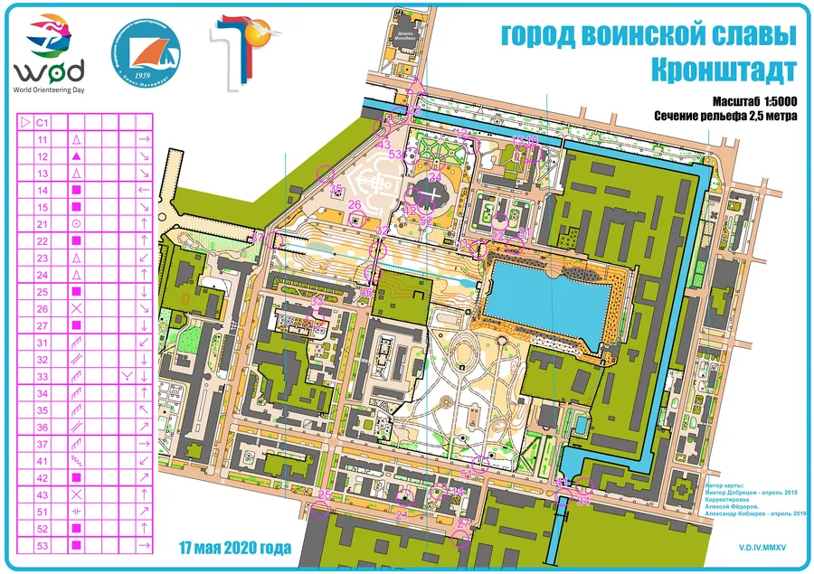
Пандемийный 2020-й остановил массовые старты — на диаграмме выше тут заметный провал — и заставил искать новые форматы. Федерация провела онлайн-тренировки по трейл-ориентированию: на первую, 11 апреля, по хронике федерации заявились больше 600 человек из 20 стран, во второй участвовали 663 человека из 23 стран, на третью зарегистрировалось больше тысячи. Всемирный день ориентирования📍 прошёл онлайн по картам Кронштадта — более 700 участников, а Д. Ельцов запустил бесконтактные полигоны — вместо чипа телефон, на КП QR-коды и NFC-метки. Привычными стали и GPS-треки участников на O-GPS-Center: в календаре O-Maps они есть у двух событий 2012 года, у 94 событий 2021-го и у 130 — 2025-го.
Тем временем лидар дошёл и до Ленинградской области. В 2022 году по президентскому гранту работала «Школа молодого картографа», и карту района у Каннельярви, подготовленную в рамках проекта, рисовали по материалам лазерного сканирования — первый подобный опыт в регионе. Осенью 2022 года на ней разыграли чемпионат города📍 в классике, а в сентябре 2023-го — в лонге📍: дистанция мужчин достигала 14,3 км, а в лес вышли больше тысячи человек. Новые карты рисуют и для «Российского Азимута», который с 2020-го каждый год переезжает в новый парк: Удельный📍, Парк 300-летия📍, Куракина дача📍, Александрино📍, Южно-Приморский парк📍.
Росла и массовость. С 2022 года проводятся всероссийские соревнования «Невский спринт»📍 — в первый год почти тысяча участников из 20 регионов; «Камни Карельского перешейка» в 2023 году собрали больше 2 500 спортсменов из 38 регионов, а во Всероссийскую неделю ориентирования в мае 2024 года в Петербурге прошло 101 мероприятие с 16 065 участниками, из них 12 580 детей, — больше, чем в любом другом регионе страны. Не всё задуманное удалось: чемпионат Европы по рогейну 2022 года в Зеркальном📍 был отменён, и на той же базе прошли Кубок России по рогейну и чемпионат России по рогейну на велосипедах, зато в августе 2026 года в Выборге📍 прошёл чемпионат России по рогейну.
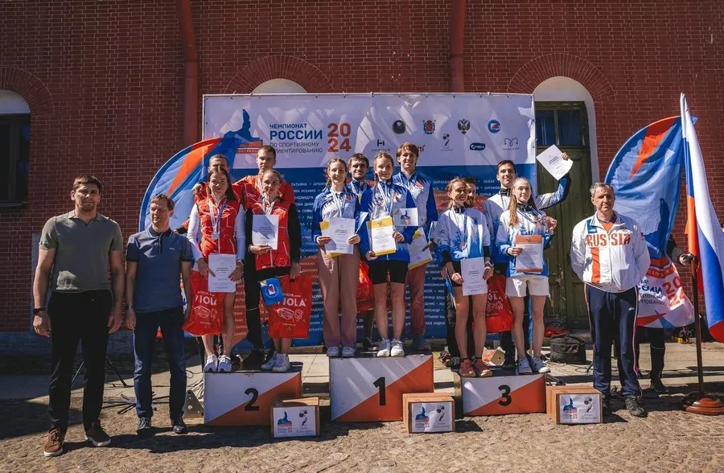
На национальном уровне новое поколение вернуло Петербургу титулы. Спринтер Артём Попов выигрывал чемпионаты России в каждом сезоне 2017📍–2021 годов; в Выборге в 2020-м📍 петербуржцы взяли ещё и кросс-эстафету, а Евгений Годлевский — общий старт. Чемпионаты России шли один за другим в области — после Выборга в Сосновом Бору📍 (2021) и Луге📍 (2022), а в мае 2024 года спринтерский чемпионат России впервые прошёл в самом Петербурге📍, в год 65-летия отечественного ориентирования: эстафета — в Петропавловской крепости, спринт — по дворам-колодцам Васильевского острова, общий старт — у Серебряного пруда. Эстафету выиграла сборная Петербурга с Юлией Усовой, серебро в личных видах взял Дмитрий Поляков. Дмитрий Цветков продолжал выигрывать чемпионаты России и в 2020-е. В велоориентировании призёром чемпионатов России стала Екатерина Ландграф, а в лыжном ориентировании сезон 2025/26 прошёл под знаком Сергея Горланова (Ленинградская область) — чемпиона Европы 2022 года📍 в эстафете, выигравшего несколько титулов чемпиона России. Юные петербургские ориентировщики приносили медали первенств мира и Европы в беге, на велосипедах и на лыжах. После решений Международной федерации ориентирования (IOF) 2022 года российские спортсмены не выступают на её стартах, поэтому медальный счёт обрывается на сезоне 2022 года.
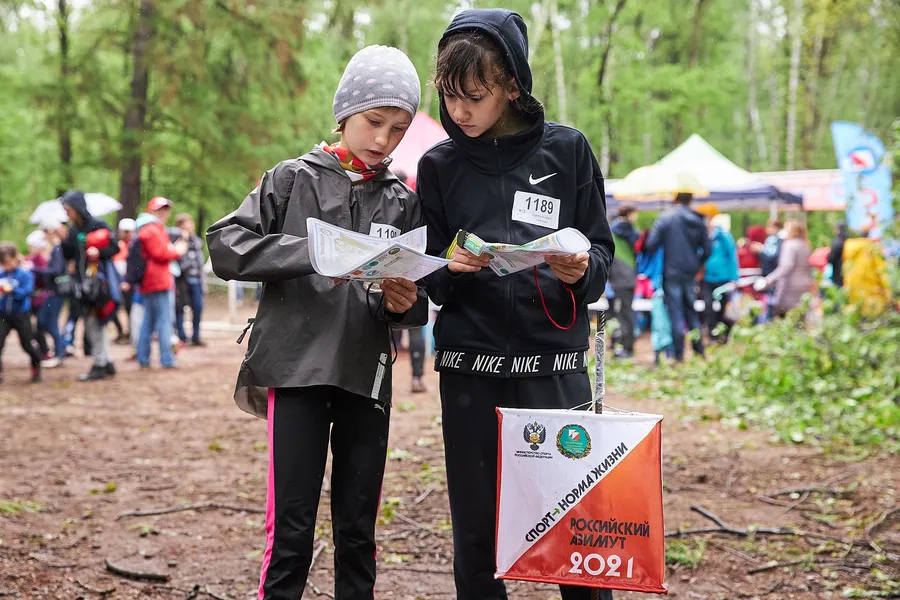
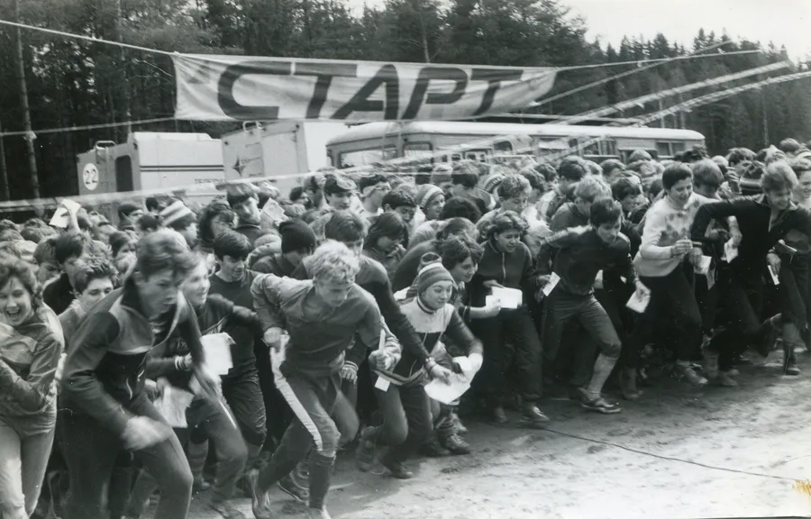
Лыжное ориентирование: от Кавголово до чемпионата Европы
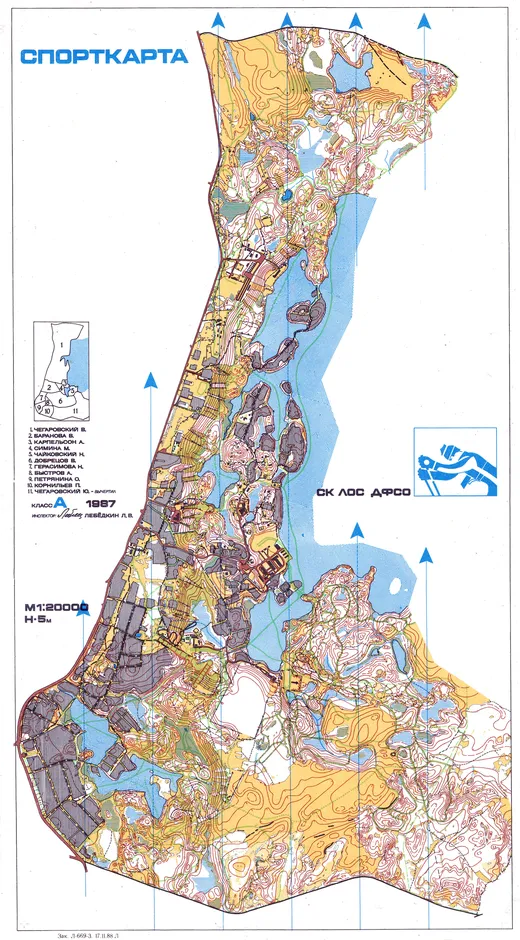
Зимние старты появились в Ленинграде почти сразу за летними: уже 12 января 1941 года, вслед за первыми ночными соревнованиями 1939-го и летним первенством 1940-го, под Кавголово прошли командные лыжные гонки по закрытому маршруту📍. Первый зимний чемпионат города📍 в новом формате — на маркированной трассе — состоялся 10 марта 1960 года в Орехово, с 1965 года в программу вошла эстафета, а в 1968-м — лыжный марафон (первыми стали Н. Махалов и О. Казанцева). Маркированную трассу со штрафными кругами — «своеобразный биатлон», как назвал её Г. В. Шур в статье 2002 года (фрагмент — в книге Благово), — придумал Л. В. Лебёдкин: штрафные круги впервые опробовали на эстафете зимнего матча городов📍 в Орехово 13 марта 1966 года. На всесоюзных зимних соревнованиях 1968 года в Калужской области📍 маркированную трассу выиграла Зоя Пятакова.
Ориентирование в заданном направлении на лыжах впервые провели в Кавголово 23 января 1972 года, на зимнем матче с Эстонией📍 (начальник дистанции С. Н. Крылов). В том же году женская команда «Труда», целиком ленинградская (О. Казанцева, Г. Цыпкина, З. Пятакова), выиграла всесоюзные зимние соревнования в Туле, в 1974-м в Перми золото взяли И. Степанова и А. Спица, а в марте 1975 года на всесоюзных зимних соревнованиях📍 в Кавголово и Энколово Ленинград впервые выиграл общий зачёт. В 1977 году в Свердловске две личные победы одержала Н. Святкина (Левичева), а обе эстафеты выиграли ленинградцы. С 1978 года заданное направление и эстафеты в нём вошли в зимний чемпионат города (первыми чемпионами стали А. Ширинян и И. Степанова), а на зимнем матче с Эстонией📍 у Орехово впервые провели эстафету в заданном направлении (начальники дистанций В. Г. Урванцев и В. Н. Белозёров).
1980-е — время ленинградских лыжниц. На Кубках СССР побеждали Н. Левичева (1981📍, 1984, 1986, 1987), И. Иванова, Н. Леканова, Т. Свистун, С. Березина, а в 1983 году в Горьком на маркированной трассе все шесть первых мест заняли ленинградки. В 1988 году Н. Левичева, С. Березина, Е. Петрова и А. Левичев первыми из ленинградцев выступили на чемпионате мира📍 в Финляндии. В 1989 году лыжное ориентирование впервые вошло в Спартакиаду народов СССР, и сборная Ленинграда выиграла её в Кунгуре, а в декабре на первом чемпионате СССР📍 в Горнозаводске Светлана Березина победила в спринте. Екатерина Петрова — обладательница восьми золотых медалей зимних всесоюзных соревнований, чемпионатов СССР и России 1988–1995 годов — выиграла первый чемпионат России📍 в 1992 году, а в 1996-м завоевала серебро в эстафете на чемпионате мира📍 в Лиллехаммере.
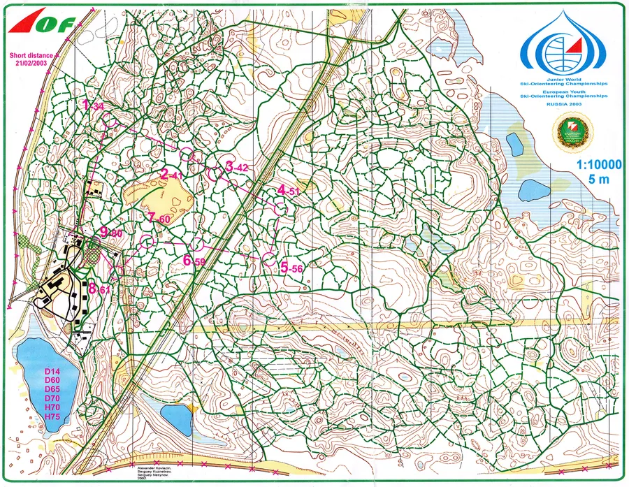
Петербург и область не раз принимали главные лыжные старты страны: личный чемпионат России 1996 года📍 в Васкелово (главный судья А. М. Бровин), финал чемпионата России 1998 года📍 в Орехово, первый в истории чемпионат мира среди ветеранов📍 (Лемболово, 1999), юниорский чемпионат мира📍 2003 года в Цвелодубово, Всероссийские зимние универсиады — 2022 года в Лемболово📍 и 2024 года в Токсово📍, первенство России 2023 года📍. Ветераны продолжали побеждать и на мировом уровне: Виктория Фершалова завоевала четыре золота зимних чемпионатов мира среди ветеранов в 1999–2007 годах и ещё два — в 2018-м, а в 2020 году две золотые медали в группе Ж70 взяла Т. Свистун. С 2007 года проводится длительное лыжное ориентирование «100×24», а в 2012 году под Лемболово прошёл чемпионат России по лыжному рогейну📍.
Новейшую историю олицетворяет Сергей Горланов (Ленинградская область) — чемпион Европы 2022 года📍 в эстафете и многократный чемпион России сезона 2025/26. Федерация, в свою очередь, решает главную проблему зимнего вида — доступность: в 2022–2023 годах по президентскому гранту действовал проект «Лыжное ориентирование — в шаговой доступности» с бесплатными открытыми тренировками на «сетке» лыжней в Кузьмолово.
- Зимние карты
- 37 карт в основном разделе архива O-Maps: 6 — 1980-х, 1 — 1990-х, 5 — 2000-х, 8 — 2010-х, 14 — 2020-х, у 3 год не указан; больше всех их у Ю. Чегаровского, В. Добрецова и А. Ковязина
- Старты в календаре
- 313 лыжных событий в 2004–2026 годах (без лыжных рогейнов); пик — 24 в 2023 году
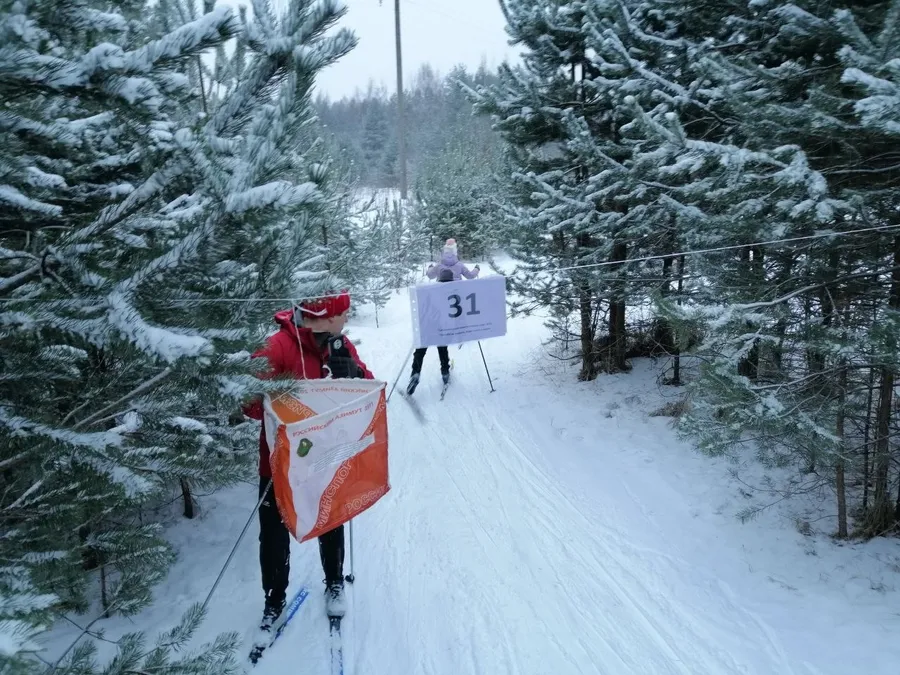
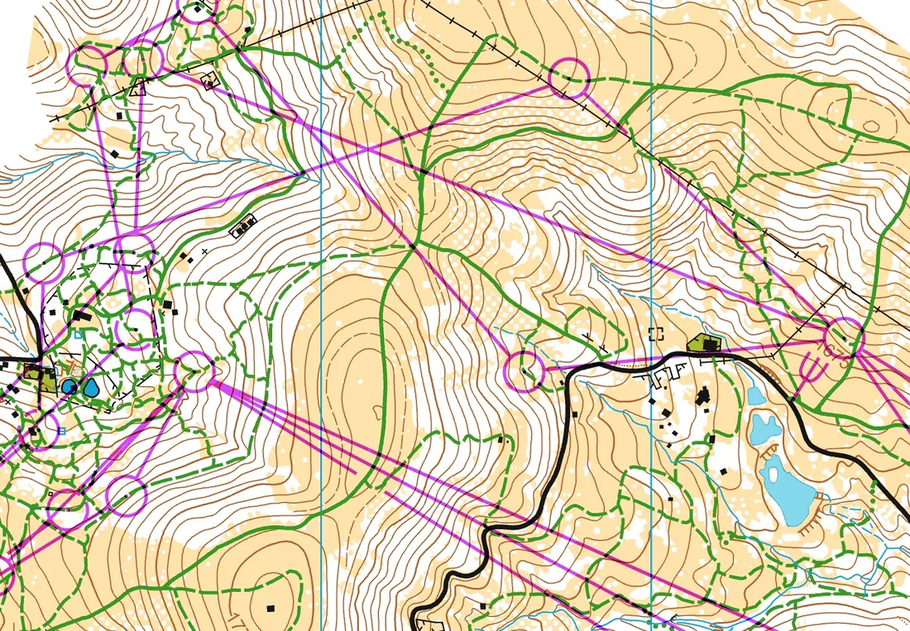
Велоориентирование: от двух «Кам» до чемпионата Европы
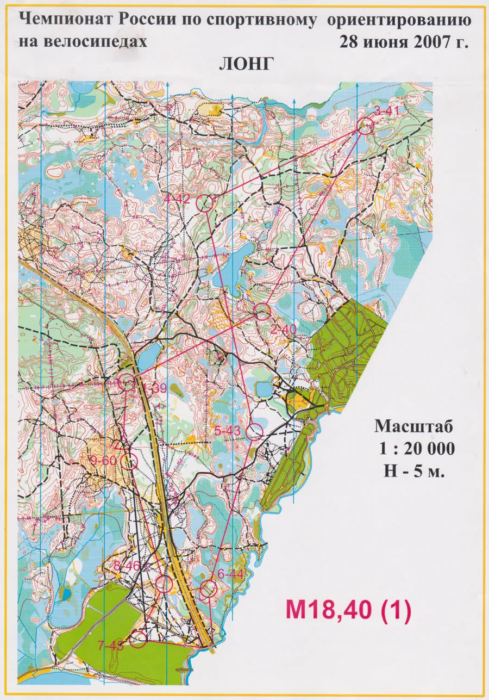
Велоориентирование в России началось именно в Петербурге. По воспоминаниям В. П. Бородина, 6 октября 1994 года на закрытии летнего сезона три участника прошли шестикилометровую трассу в заданном направлении — двое на складных «Камах» и один на настоящем маунтинбайке, преимущество которого было очевидным. На следующий день решили покупать байки, при городской федерации появилась комиссия по ориентированию на МТБ, и летом 1995 года 7–8 энтузиастов уже регулярно стартовали на специальных трассах, а двое съездили на этап Кубка Финляндии — там 13-летний Сергей Степанов стал вторым в группе Н16. Одним из основателей нового вида был «энтузиаст и бессребреник» Борис Панкратьев, прорубавший трассы и переводивший зарубежные материалы; его памяти с 2006 года📍 посвящены соревнования по велоориентированию.
13–15 сентября 1996 года в Лемболово📍 прошёл первый чемпионат России: победителями по сумме трёх дней стали Виктор Корчагин (Московская область) и Екатерина Петрова и получили новенькие маунтинбайки, а среди призёров было много петербуржцев — Вячеслав Семёнов, Андрей Колобов, Тарас Фёдоров, Анастасия Фёдорова, Гюльнара Пашаева. Тренерами первой сборной России стали В. П. Бородин и И. Степанова (подробнее — в статье о чемпионатах России на велосипедах). В 2004 году в Орехово прошёл чемпионат России📍 (бронза у мужской эстафеты Петербурга — И. Гусев, А. Шелёхин, Ю. Бородулин), в том же году — чемпионат города по MTB-O📍, а в 2007 году Лемболово и Васкелово снова приняли чемпионат России📍. В 2006 году А. Будкин и И. Бондаренко первыми из петербуржцев выступили на чемпионате мира📍 в Финляндии.
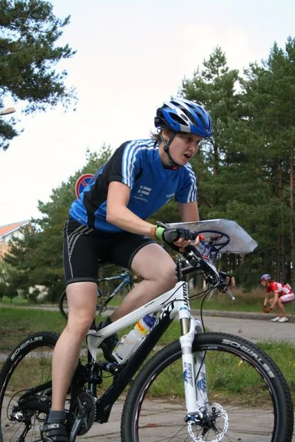

Вершиной стал чемпионат Европы 2011 года📍 с центром в Рощино, совмещённый с финалом Кубка мира: обе российские эстафеты там стали серебряными. Затем область принимала чемпионат России 2019 года📍 в Кавголово, первенство России 2023 года📍 в Лемболово, а Федерация спортивного ориентирования Петербурга — всероссийские и международные соревнования 2025 года📍 в Зеленогорске и международные соревнования 2026 года📍. Рядом развиваются родственные форматы: велорогейны (в 2013 году под Полянами прошёл первый чемпионат России по рогейну на велосипедах📍) и BikeAdventure — ориентирование на велосипедах с преодолением естественных препятствий. Из петербургских спортсменов призёром чемпионатов России в последние годы становилась Екатерина Ландграф.
- Велокарты
- 51 карта в основном разделе архива O-Maps: 1 — 1990-х (Дудергоф), 8 — 2000-х, 6 — 2010-х, 34 — 2020-х, у 2 год не указан; больше всех их у В. Матреничева, Р. Кузнецова и А. Шириняна
- Старты в календаре
- 168 событий велоориентирования в 2004–2026 годах (без велорогейнов)
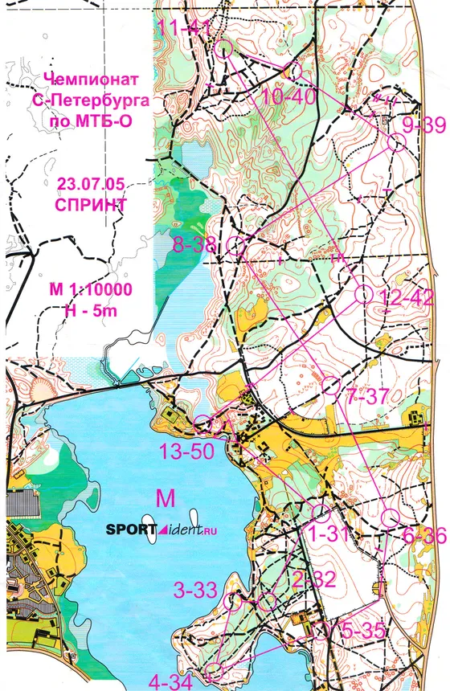
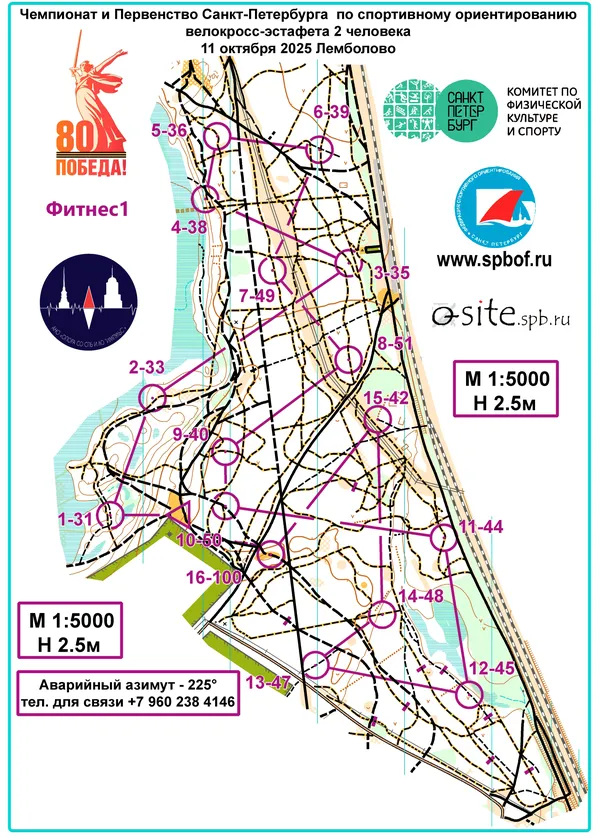
Тренеры
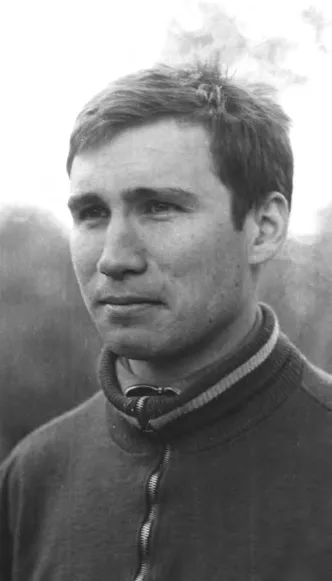
Первым тренером Ленинграда была дипломированный специалист Гертруда Николаевна Васильева: её ученики Л. Милова, В. Митенков, Г. Козлович, Л. Фомичёва доказали, что одного туристского опыта мало. В 1972 году она защитила первую в РСФСР диссертацию по методике тренировки ориентировщиков. Технику и тактику ставил Л. В. Беляков — автор известной «коробочки Белякова» и одной из первых методик (1968), тренер сборных города и СССР. С конца 1960-х ведущим тренером стал выпускник института Лесгафта С. Н. Крылов, при котором выросли скоростная выносливость и умение читать карту на бегу; в начале 1970-х атлетикой сборной занимался Ю. И. Глебов, а во второй половине десятилетия лыжную подготовку женщин поставил А. А. Рубцов — его заслуга есть в успехах И. Степановой и И. Ивановой.
Областную школу основал в 1969 году Ю. Н. Леонов, первый тренер Н. Левичевой, М. Святкина, Е. Кириченко. Первым тренером областного ориентирования называют М. М. Малову. К началу 1980-х в ДСО и коллективах физкультуры работали штатные и общественные тренеры из сильных спортсменов: В. М. Баймаков («Зенит»), В. Н. Белозёров и В. Г. Урванцев (Дворец пионеров), А. М. Бровин («Динамо»), А. М. Василевский, А. В. Волков и Л. А. Фёдоров («Спартак»), С. А. и О. М. Казанцевы («Экран»), А. Б. Осмехин (ЛТИ), Н. Г. Пирогов («Электросила»), З. В. Пятакова (ДЮСШ Сестрорецкого района), С. А. Рачицкий (ЛИАП; в 1993 году — главный тренер сборной России на чемпионате мира), А. А. Ширинян (СКА), В. Н. Шумилов («Труд», Кузьмоловская школа). Сборную Ленинграда, выигравшую общий зачёт чемпионата СССР 1986 года, готовили С. В. Кузнецов и Ю. Б. Овчинников. Белозёров в 1984 году создал спортшколу № 2 при Дворце пионеров (ныне СДЮШОР-2 ГДТЮ) и бессменно руководил ею; Урванцев много лет работал с юношескими сборными страны. В армейском спорте сборную ВС России тренировала Л. В. Анучкина, в университетском — Б. А. Михайлов.
Следующее поколение тренеров вырастило мировых призёров: у К. В. Волкова занимались М. Мамлеев и Е. Марковкина (а позже и Артём Попов); М. В. Гуреев — тренер С. Деткова, М. В. Семёнов — Е. Шараповой и Д. Ибрагимова, А. Н. Козьмов, Ю. А. Березюк и В. Л. Чегаровский — Д. Цветкова. С. Ю. Дробышев в 2001 году первым из петербургских ориентировщиков стал заслуженным тренером России — за выступление команды глухих на Сурдлимпийских играх; в 2007 году это звание получила В. С. Фершалова («Балтийский берег»). В 2005 году почётный знак «За заслуги в развитии физической культуры и спорта Санкт-Петербурга» среди первых получили пять детских тренеров-ориентировщиков — В. Н. Белозёров, К. В. Волков, М. В. Гуреев, С. Б. Сахарова и В. Г. Урванцев. Сегодня чемпионов и призёров страны готовят, в частности, Е. Н. Грошева («Экран» — и бег, и лыжи, и велосипед), Л. В. Сергеева и М. В. Малышев (Nord West; Сергеева в 2017 году признана лучшим тренером города по неолимпийским видам), А. В. Егоров (FOREST Team, Пушкин), А. В. Соловьёва (ABC), А. М. Волков (клуб «31 КП» для спортсменов с нарушением слуха и трейл-ориентирование).
Петербургская тренерская мысль оставила и большую библиотеку. Монографии «Основы беговой подготовки в спортивном ориентировании» (Б. А. Михайлов, А. А. Ширинян и др., 1994) и «Психофизиология спортивного ориентирования» С. А. Казанцева (2000), его же диссертация об интегральной подготовке ориентировщиков (2005), книга А. А. Шириняна и А. В. Иванова «Современная подготовка спортсмена-ориентировщика» (2008) и многочисленные пособия Шириняна. Многие из этих работ есть в разделе «Книги и статьи» O-Maps.
Руководители, судьи, почётные члены
За всеми этими стартами стояли общественники. Первым руководителем ленинградских ориентировщиков была Г. Н. Васильева (1962–1966), затем секцию и федерацию дольше всех возглавлял Н. В. Благово (1966–1983 и 2003–2007). Председателями и президентами также были генерал-майор А. В. Петров (1983–1986), капитан I ранга Г. В. Морозов (1986–1988), инженер А. С. Манаев (1988–1990), экономист С. Г. Беляев (1990–1992), Г. В. Ильменков (1992–1995), тренер В. П. Бородин (1995–2000), генерал-полковник В. Н. Саввин (2000–2003) и инженер А. А. Курдюмов (2007–2013); с 2013 года федерацию возглавляет Д. В. Куприенко. Судейскую школу заложили первые судьи всесоюзной категории — Л. В. Лебёдкин и А. И. Муравьёв (1967), Н. В. Благово, Л. В. Беляков, А. Д. Котов, В. М. Баймаков, Ю. Н. Леонов и Э. П. Бусыгин. Имена почти трёхсот энтузиастов собраны в «Списке 280» на O-Site, а почётными членами городской федерации избраны 57 человек — от Г. Н. Васильевой и И. Е. Штейнбука до Е. В. Петровой и С. Ю. Деткова.
Вместо заключения
Сам Никита Благово в послесловии 2016 года к своей книге с горечью писал, что Петербург во многом утратил завоёванное в первую четверть века лидерство, что «доморощенных» картографов почти не осталось и карты рисуют приезжие, а летопись ленинградского ориентирования никто не продолжил.
Десять лет спустя картина такая. В календаре O-Maps по Петербургу и области 237 событий в 2025 году и 240 — в 2026-м вместе с запланированными до конца сезона (диаграмма выше). Основу сезона составляют серии — Кубок Белых ночей, Спринт-Тур, Эстафетная лига клубов Северо-Запада (с 2024 года), и появляются новые организаторы: клуб «Длительный» с весны 2025 года проводит собственные старты, «Феникс» с осени — регулярные тренировки. Заявку на старты всё чаще принимают через Orgeo, треки участников публикуют на O-GPS-Center, карты для «Российского Азимута» каждый год рисуют новые, а «Школа молодого картографа» в 2022 году впервые в регионе применила лидарную съёмку. Отстранение российских федераций от стартов Международной федерации ориентирования (IOF) в марте 2026 года оставлено в силе, и международные старты теперь проводят у себя: в этом статусе прошли «Невский спринт» 2025 года📍 и велосоревнования📍 в мае 2026-го.
Направления видны по последним сезонам: спринты всё чаще проходят в исторических кварталах, карты переходят на лидарную основу, отметка становится бесконтактной (весной 2026 года на открытии сезона в Петергофе📍 испытывали бесконтактную отметку SFR), а федерация ведёт проекты по президентским грантам для школьников, взрослых новичков и трейл-ориентирования. А летопись, о которой сожалел Благово, теперь собирают сразу несколько источников: летопись и «Узелки» на O-Site, хроника федерации и архивы O-Maps — карты, календарь и сканы документов. Традиция, начатая у Линдуловки, жива и теперь лучше задокументирована.
Статья составлена в октябре 2026 года. Это компиляция материалов O-Maps и других источников, перечисленных в конце страницы, при её подготовке использовался ИИ. Если вы заметили неточность или можете дополнить рассказ, напишите нам.
Источники
Н. В. Благово, «Первые азимуты на берегах Невы. Спортивное ориентирование Ленинграда в 1959–1984 гг.» (СПб., 2017; редакция O-Maps 2026 года) — текст и иллюстрации; В. В. Добрецов, «Спортивное ориентирование в Ленинграде — Санкт-Петербурге»: история 1959–1984, летопись 1939–2008, «Узелки», статистика; Федерация спортивного ориентирования Санкт-Петербурга — вехи 1939–1991, вехи 1992 — наст. время, руководители, медальный лист, проекты и фотографии; даты, места, результаты и карты — календарь и архив карт O-Maps (числа о картах и событиях O-Maps в тексте и на диаграммах — по состоянию на октябрь 2026 года, архив и календарь продолжают пополняться); статьи O-Maps о чемпионатах СССР, велоориентировании, чемпионатах мира, Европы и чемпионатах Европы на велосипедах.Указатель имён
Люди, упомянутые в статье. Имя ведёт на основную страницу о человеке (отчество, если известно, — во всплывающей подсказке), за ним — другие источники, цифры в конце — места упоминаний в тексте.
- Алексеев Владимир · O-Site, 1987 · O-Site, 1988 · O-Site, 1991 · O-Site, 1996 · O-Site, 2001 · «Список 280» · почётные члены ФСО СПб 1 2 3
- Алёшин Виктор · карты на O-Maps 1
- Анучкина Лариса · «Список 280» 1
- Базанов Алексей · карты на O-Maps · «Список 280» 1
- Баймаков Владимир · карты на O-Maps · «Список 280» · почётные члены ФСО СПб 1 2 3 4 5
- Белозёров Владимир · карты на O-Maps · «Список 280» · почётные члены ФСО СПб 1 2 3 4 5
- Беляев Сергей · «Список 280» · руководители ФСО СПб 1
- Беляков Людвиг · O-Site, к юбилею «Экрана» · карты на O-Maps · «Список 280» · почётные члены ФСО СПб 1 2 3 4 5 6 7 8 9 10
- Благово Никита · O-Site, «Патриарх питерского ориентирования» · «Азимут» · книга «Первые азимуты…» · «Список 280» · почётные члены ФСО СПб · руководители ФСО СПб 1 2 3 4 5 6 7 8 9 10 11 12 13 14
- Бондаренко Игорь · карты на O-Maps 1
- Бородин Виктор · «Список 280» · почётные члены ФСО СПб · руководители ФСО СПб 1 2 3
- Бородулин Юрий · карты на O-Maps · «Список 280» 1
- Бровин Александр · «Список 280» · почётные члены ФСО СПб 1 2 3 4 5
- Василевский Александр · VK ФСО СПб · карты на O-Maps · «Список 280» · почётные члены ФСО СПб 1 2 3
- Васильев Алексей · «Список 280» 1 2
- Вергилесов Фёдор · «Список 280» 1
- Волков Андрей · O-Site · Мемориал Волкова · карты на O-Maps · «Список 280» 1 2
- Волков Константин · O-Site, «О креативности» · O-Site, о сезоне Мамлеева, 2003 · карты на O-Maps · почётные члены ФСО СПб 1 2 3
- Григоренко Алексей · «Список 280» · почётные члены ФСО СПб 1
- Грязневич Михаил · карты на O-Maps · «Список 280» 1
- Губанова Анна · «Список 280» · почётные члены ФСО СПб 1
- Гусев Илья · O-Site, о чемпионате мира 1993 года · карты на O-Maps 1 2
- Детков Сергей · «Список 280» · почётные члены ФСО СПб 1 2
- Добкович Владимир · «Список 280» 1 2 3 4 5
- Добрецов Виктор · O-Site, история на O-Site · карты на O-Maps · «Список 280» 1 2 3
- Дробышев Сергей · O-Site, некролог · карты на O-Maps · «Список 280» 1
- Ельцов Денис · карты на O-Maps 1
- Иванова (Нестерова) Эви · «Список 280» 1
- Иванова Ирина · «Список 280» · почётные члены ФСО СПб 1 2 3 4 5
- Игнатенко Валерий · карты на O-Maps 1
- Казанцев Сергей · о Святкине, «Азимут» 2003 № 2 · карты на O-Maps · «Список 280» 1
- Казанцева (Малова) Ольга · карты на O-Maps · «Список 280» · почётные члены ФСО СПб 1 2 3 4 5 6 7 8 9 10
- Кириченко Сергей · карты на O-Maps 1
- Ковязин Александр · карты на O-Maps 1 2
- Козлович Геннадий · «Список 280» · почётные члены ФСО СПб 1 2 3 4 5
- Котов Александр · «Список 280» · почётные члены ФСО СПб 1 2
- Кравченко Виктор · «Список 280» · почётные члены ФСО СПб 1
- Крылов Сергей · «Список 280» · почётные члены ФСО СПб 1 2 3 4 5 6 7 8
- Кузнецов Сергей · O-Site, «Российские скалы» · старты его памяти · карты на O-Maps · «Список 280» · почётные члены ФСО СПб 1 2 3 4
- Куприенко Денис · карты на O-Maps · руководители ФСО СПб 1 2
- Курдюмов Александр · руководители ФСО СПб 1 2
- Лебёдкин Лев · «Азимут» 1999 № 1 · карты на O-Maps · «Список 280» · почётные члены ФСО СПб 1 2 3 4 5 6 7 8 9 10
- Левичев Александр · O-Site, о чемпионате мира 1988 года · карты на O-Maps · почётные члены ФСО СПб 1 2 3
- Леонов Юрий · «Азимут» 2015 № 1 · «Список 280» 1 2 3 4 5
- Лисененков Александр · карты на O-Maps · «Список 280» 1 2
- Малинин Валерий · «Список 280» · почётные члены ФСО СПб 1 2 3 4 5
- Малова Мария · карты на O-Maps · «Список 280» · почётные члены ФСО СПб 1 2 3
- Мамлеев Михаил · O-Site, 1999 · O-Site, «Прямая линия», 2001 · O-Site, послужной список · O-Site, интервью, 2003 · O-Site, сезон 2003 года · O-Site, Orienteering Today, 2005 · «Азимут» 2003 № 2 · карты на O-Maps · «Список 280» 1 2 3
- Манаев Александр · «Список 280» · руководители ФСО СПб 1
- Махалов Николай · «Список 280» 1
- Мельников Олег · «Список 280» 1
- Милова (Филина) Лидия · «Список 280» · почётные члены ФСО СПб 1 2 3 4 5 6 7
- Митенков Валерий · «Список 280» · почётные члены ФСО СПб 1 2 3 4 5 6
- Михайлов Борис · карты на O-Maps · «Список 280» 1 2
- Муравьёв Анатолий · «Список 280» · почётные члены ФСО СПб 1 2 3 4 5 6 7
- Овчинников Юрий · карты на O-Maps · «Список 280» 1 2 3 4 5
- Осмехин Анатолий · карты на O-Maps · «Список 280» 1 2
- Панкратьев Борис · «Список 280» 1
- Петрова Екатерина · «Список 280» · почётные члены ФСО СПб 1 2 3 4 5 6
- Потаков Анатолий · O-Site, «Ориентирование на байдарках» · «Список 280» 1
- Пятакова Зоя · «Список 280» · почётные члены ФСО СПб 1 2 3 4 5 6 7 8 9 10 11 12 13
- Рачицкий Станислав · «Список 280» 1
- Рубцов Алексей · «Список 280» 1
- Рыжик Валерий · «Список 280» 1
- Свистун Татьяна · «Список 280» · почётные члены ФСО СПб 1 2 3
- Святкин Михаил · O-Site, Мемориал 1993 года · «Азимут» 2003 № 2 · Мемориал Святкина · карты на O-Maps · «Список 280» · почётные члены ФСО СПб 1 2 3 4 5 6
- Степанова Ирина · карты на O-Maps · «Список 280» · почётные члены ФСО СПб 1 2 3 4 5 6 7 8
- Тарасов Борис · карты на O-Maps 1
- Токмаков Константин · интервью ФСО СПб · карты на O-Maps · «Список 280» 1 2
- Урванцев Вадим · карты на O-Maps · «Список 280» 1 2 3 4
- Фёдоров Леонид · карты на O-Maps · «Список 280» 1 2 3
- Фершалова Виктория · карты на O-Maps · «Список 280» · почётные члены ФСО СПб 1 2
- Фомичёва Людмила · «Список 280» · почётные члены ФСО СПб 1 2 3 4 5 6 7
- Цветков Дмитрий · O-Site, 2003 · «Список 280» 1 2 3 4
- Цыпкина Галина · «Список 280» · почётные члены ФСО СПб 1 2 3
- Чегаровский Виталий · карты на O-Maps · «Список 280» · почётные члены ФСО СПб 1 2 3 4
- Чегаровский Юрий · карты на O-Maps 1
- Шелёхин Юрий · карты на O-Maps · «Список 280» 1 2 3 4
- Ширинян Александр · O-Site, книга 1994 года · O-Site, книга 2008 года · карты на O-Maps · «Список 280» · почётные члены ФСО СПб 1 2 3 4 5 6 7 8 9
- Ширшова Елена · «Список 280» 1
- Штейнбук Исаак · «Список 280» · почётные члены ФСО СПб 1 2
- Шумилов Владимир · «Список 280» 1 2 3 4
Посмотреть архив: летопись Виктора Добрецова · книга Н. В. Благово · статистика карт Петербурга · документы O-Maps.